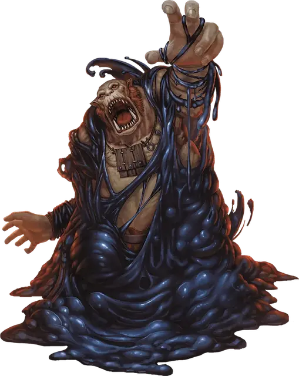

Чёрная слизь
Black Pudding
Большая Слизь, без мировоззрения

Класс Доспеха 7
Хиты 85 (10к10 + 30)
Скорость 20 футов, лазая 20 футов
| мод | спас | ||
|---|---|---|---|
| СИЛ | 16 | +3 | +3 |
| ЛОВ | 5 | −3 | −3 |
| ТЕЛ | 16 | +3 | +3 |
| мод | спас | ||
|---|---|---|---|
| ИНТ | 1 | −5 | −5 |
| МДР | 6 | −2 | −2 |
| ХАР | 1 | −5 | −5 |
Иммунитет к урону кислота, холод, электричество; рубящий
Иммунитет к состояниям сбивание с ног, очарование, ослепление, истощение, испуг, глухота
Чувства слепое зрение 60 футов (слеп за пределами этого радиуса), пассивное Восприятие 8
Опасность 4 (1100 опыта)
Бонус мастерства +2
Среда обитания Подземье
Особенности
Аморфный. Слизь может перемещаться сквозь пространство шириной в 1 дюйм без протискивания.
Едкое тело. Существо, касающееся слизи или попадающее по ней рукопашной атакой, находясь в пределах 5 футов от нее, получает урон кислотой 4 (1к8). Немагическое оружие, изготовленное из металла или дерева, попадающее по слизи, начинает разъедаться. После причинения урона оружие получает постоянный накопительный штраф -1 к броскам урона. Если этот штраф дойдет до -5, оружие будет уничтожено. Немагические боеприпасы, изготовленные из металла или дерева, попадающие по слизи, уничтожаются после причинения урона.
Слизь может разъесть 2 дюйма немагического металла или дерева за 1 раунд.
Паучье лазание. Слизь может лазать по сложным поверхностям, включая потолки, без совершения проверок характеристик.
Действия
Ложноножка. Рукопашная атака оружием: +5 к попаданию, досягаемость 5 футов, одна цель. Попадание: Дробящий урон 6 (1к6 + 3) плюс урон кислотой 18 (4к8). Кроме того, немагический доспех, носимый целью, частично растворяется и получает постоянный накопительный штраф −1 к КД, который он предлагает. Доспех уничтожается, если штраф уменьшает его КД до 10.
Реакции
Разделение. Если слизь с размером не меньше Среднего получает рубящий урон или урон электричеством, она разделяется на две новые слизи, если у неё есть как минимум 10 хитов. У каждой новой слизи хитов в два раза меньше, чем у исходной, округляя в меньшую сторону. Новые слизи на один размер меньше чем исходная.
Описание
Чёрная слизь напоминает вздымающуюся кучу чёрной густой грязи. В темных проходах он выглядит просто пятном тени.
Плоть, древесина, металл и кости растворяются, когда на них наползает эта слизь. За ней остается только голый камень.
См. дополнительно статью: "Бестиарий: Слизь"